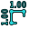

L'accrochage permet de "coller" votre prochain point 3d sur un point existant. L'accrochage est disponible avec la plupart des outils Draft et Arch, et peut être activé ou désactivé globalement avec la commande  Draft ToggleSnap. Chaque outil d'accrochage ci-dessous peut également être activé ou désactivé individuellement, en cliquant sur le bouton correspondant présent sur la barre d'outils d'accrochage. Affichage → Barres d'outils → Accroche Draft
Draft ToggleSnap. Chaque outil d'accrochage ci-dessous peut également être activé ou désactivé individuellement, en cliquant sur le bouton correspondant présent sur la barre d'outils d'accrochage. Affichage → Barres d'outils → Accroche Draft

Modes d’accrochages disponibles
-
 Milieu: L'accrochage se fait sur le milieu du point ou ligne et segment d'arc.
Milieu: L'accrochage se fait sur le milieu du point ou ligne et segment d'arc. -
 Perpendiculaire: Perpendiculaire à une ligne et arc, perpendiculaire au dernier point.
Perpendiculaire: Perpendiculaire à une ligne et arc, perpendiculaire au dernier point. -
 Grille: L'accrochage se fait sur un croisement de la grille si la grille est visible.
Grille: L'accrochage se fait sur un croisement de la grille si la grille est visible. -
 Intersection: L'accrochage se fait sur l'intersection de 2 lignes ou arc de cercle. Passez la souris sur une intersection pour activer l'accrochage sur cette intersection.
Intersection: L'accrochage se fait sur l'intersection de 2 lignes ou arc de cercle. Passez la souris sur une intersection pour activer l'accrochage sur cette intersection. -
 Parallèle: L'accrochage se fait sur une ligne parallèle imaginaire au segment de ligne. Passez la souris sur l'objet désiré pour activer l'accrochage sur cette ligne parallèle.
Parallèle: L'accrochage se fait sur une ligne parallèle imaginaire au segment de ligne. Passez la souris sur l'objet désiré pour activer l'accrochage sur cette ligne parallèle. -
 Terminaison: L'accrochage se fait sur le point final d'une ligne ou d'un arc de cercle et spline.
Terminaison: L'accrochage se fait sur le point final d'une ligne ou d'un arc de cercle et spline. - Angle: L'accrochage se fait sur sur un point cardinal de cercle et arc a 45° et 90°.
-
 Centre: L'accrochage se fait au point central d'un arc ou cercle.
Centre: L'accrochage se fait au point central d'un arc ou cercle. -
 Extension: L'accrochage se fait sur la fin imaginaire d'une ligne. Passez la souris sur l'objet désiré pour activer cette extension d'accrochage.
Extension: L'accrochage se fait sur la fin imaginaire d'une ligne. Passez la souris sur l'objet désiré pour activer cette extension d'accrochage. -
 Le plus proche: L'accrochage se fait sur le point d'accrochage le plus proche.
Le plus proche: L'accrochage se fait sur le point d'accrochage le plus proche. -
 Ortho: L'accrochage se fait sur le croisement d'une ligne imaginaire à partir du dernier point et étendu à 0°, 45° et 90°.
Ortho: L'accrochage se fait sur le croisement d'une ligne imaginaire à partir du dernier point et étendu à 0°, 45° et 90°. - Spécial: sur des points spéciaux définis par objet available in version 0.17
{kind=link}
{kind=link}
-  Dimensions: permet d'accrocher sur une des trois lignes formant une cote Draft
-
 Restrict to working plane: Crée toujours le point d'accrochage sur le plan courant même si votre point est hors du plan courant.
Restrict to working plane: Crée toujours le point d'accrochage sur le plan courant même si votre point est hors du plan courant.
{kind=link}
Options
-
 Verrou : Active ou désactive globalement les fonctions d’accrochage.
Verrou : Active ou désactive globalement les fonctions d’accrochage. - Certaines fonctionnalités supplémentaires peuvent être obtenues en combinant 2 systèmes d’accrochage, comme ortho + extension, qui vous donnera un point d'accrochage à l'intersection des lignes imaginaires.
- D'autres emplacements d’accrochages plus complexes peuvent également être obtenus, à l'aide de Draft_Constrainte (en appuyant sur Maj , ou X , ou Y , ou Z pendant le dessin).
- Maintenir la touche L enfoncée pendant le dessin verrouille l'angle du segment de ligne.
- La distance maximale à partir de laquelle un point s'accroche est spécifiée dans les préférences, et peut être modifiée à la volée en appuyant sur les touches [, ou ].
- Maintenir la touche Q enfoncée pendant le dessin fixe un point d'arrêt à l'endroit courant du curseur de souris. Il est alors possible d'accrocher orthogonalement à ces points d'arrêt, ainsi qu'à l'intersection de leurs axes orthogonaux. Si l'accrochage milieu est activé, il sera aussi possible d'accrocher à la distance médiane entre deux points d'arrêt. Disponible dans la version 0.17